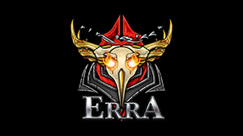

The Desciples of Erra

The Tenno that have seen through the Lotus's deciet and now follow the righteous path Erra has set before them. Through Erra we had our eyes opened to the truth that lies withi the void. He will lead us to our rightful destiny, all you must do is follow. Will you follow him Tenno?